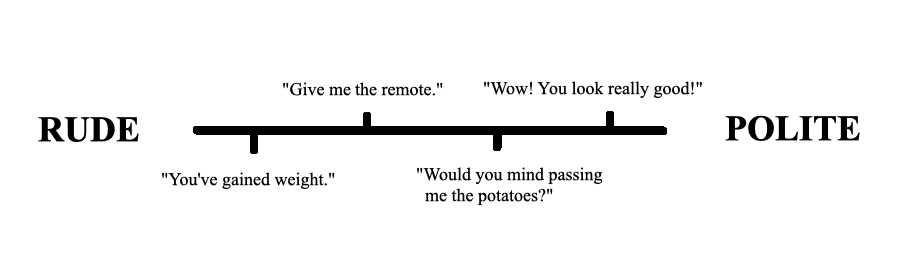
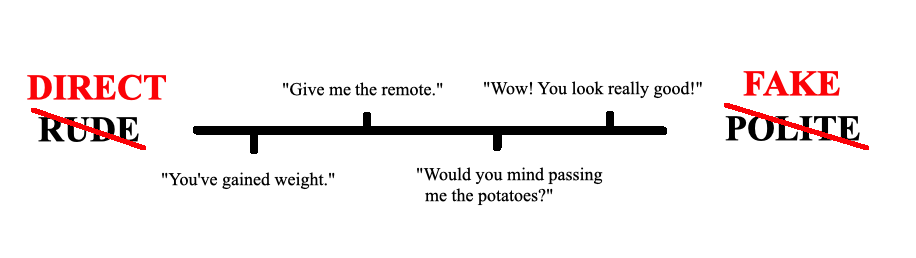

do you have to be fake to be polite?
While I was studying in France, my friend Cati described why some of the things French people said to us seemed rude. There's a scale running from rude to polite.

But some cultures [1] see that same scale a little differently.

Cati got me thinking: how much fakeness and dishonesty is baked into being polite?
We tell kids not to say anything if they don't have nice things to say. While being quiet can be a good way to be polite without being fake, politeness sometimes asks more of us: an agreeable smile, a pleasant "how are you doing," et cetera. Are these things fake?
I don't think so, even if you don't really care how someone is doing.
Politeness is theater. It's a performance that keeps social interactions predictable and respectful, especially when we're with people we don't know that well. It's not always truthful, but just like we suspend our disbelief to enjoy a good story, we suspend our disbelief during interactions with others to make them go smoothly.
Yuval Harari's book Sapiens [2] suggests this suspension of disbelief is our species' big innovation. Unlike Neanderthals, we're able to work with strangers by believing in common fictions. Things like rules, governments and money don't really exist, but by pretending they do, we can trust pharamacists to give us drugs that work, bankers not to steal our money, etc.
Politeness, like rules, governments and money, is another fiction working as a social lubricant. So there is an untruthfulness baked into politeness, but it's something apart from fakeness.
Sometimes the politeness performance completely falls apart. When people with wildly different backgrounds or personalities interact, it's not even like they're performing with different scripts. It's as if one of them doesn't realize they're in a play (I bet this is what's going on a lot of the time when someone is described as fake).
I see this happen across gender a lot. Sometimes women I interact with seem to me to be doing too much — every text ends in two or three exclamation marks, they're always positive, excited, bubbly, whatever. But my sister explained to me how easy it is catch a reputation as a bitch. It really only takes one interaction. One day you're tired and not really in the mood to talk, so suddenly someone (and all their friends, of course) sees you as a bitch.
So on top of being a tool for keeping interactions predictable and respectful, politeness appears to be a sort of defense mechanism for a lot of women. It's a good and useful thing, even though it's kind of annoying sometimes.
(5/15/19)
[1] and subcultures and individuals — these differences usual happen at a finer scale than country-to-country.
[2] This is a pop science book that might be full of shit.